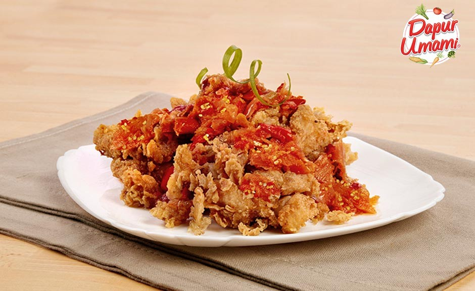

Siapa yang bisa menolak makanan pedas, gurih dan renyah yang menggelitik lidah? Tak hanya menciptakan rasa pedas yang menambah nafsu makan, cabai juga mengandung beta karoten yang bisa menjadi antioksidan. Dipadukan dengan daging ayam berbalut Sajiku® Golden Crispy yang digoreng renyah, hidangan ini tentunya terasa makin mantap dan bikin Mama dan keluarga ketagihan!
Bahan Bahan
- 3 ptg Ayam
- 1 bks Sajiku® Golden Crispy 80gr
- 700 ml Minyak Goreng
- 4 sdm Air
Bahan Sambal:
- 2 siung Bawang Putih
- 5 siung Bawang Merah
- 2 bh Cabai Merah Keriting
- 3 bh Cabai Rawit
- 1 bh Tomat Kecil
- 1 bh Jeruk Nipis
- ½ sdt AJI-NO-MOTO®
- 3 sdm Minyak Panas
Cara Memasak:
- Adonan basah : larutkan 1 sdm Sajiku® Tepung Bumbu Golden Crispy dengan 4 sdm air. Sisanya digunakan sebagai adonan kering. Gulingkan potongan ayam kedalam adonan kering, lalu celupkan ke adonan basah hingga rata, Gulingkan kembali ke adonan kering sambil diremas-remas hingga terbentuk kulit yang keriting, ketuk-ketuk.
- Goreng ayam terendam dalam minyak panas hingga berwarna kuning keemasan, angkat.
- Geprek ayam goreng di atas cobek
- Buat sambal : Ulek bawang merah, bawang putih, cabai merah, cabai rawit, dan tomat, tambahkan perasan jeruk nipis dan AJI‑NO‑MOTO®, lalu siram dengan 3 sdm minyak panas. Sajikan sambal di atas ayam geprek.